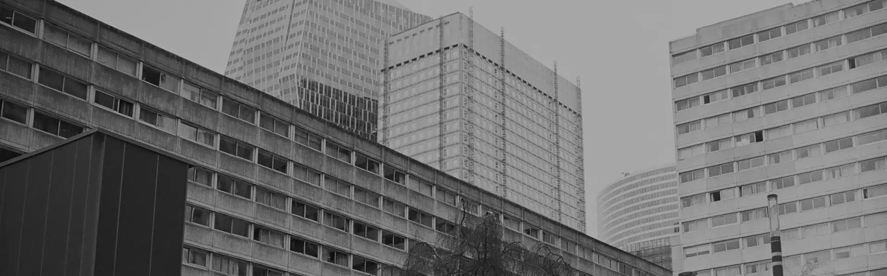
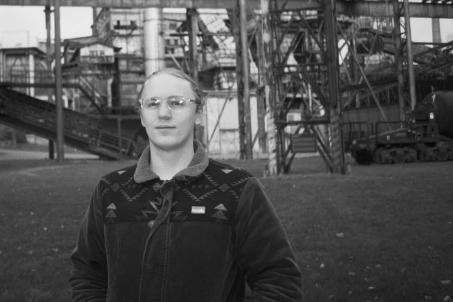

Etwas nicht zu können ist kein Grund es nicht zu tun.

Überlegen Sie mal: Ein mattes und unambitioniertes Profil in einem sozialen Netzwerk für Geschäftskontakte, da sagt keiner was. Aber so eine eigene Website, pah, ziemlich eingebildet, oder?
Als medienschaffende, forschende und politisch aktive Person beschäftige ich mich jedenfalls mit sozialen, didaktischen und ethischen Fragestellungen.
Derzeit setze ich mich als parteiloses Mitglied im Stadtrat von Neustadt an der Aisch für die Erfordernisse einer modernen, resilienten und vor Allem fränkischen Stadt ein.
Godspeed und danke für Ihren Besuch, Ihr Dennis Münch
Meine Projekte
Im Rahmen meines Self-Publishings erscheinen regelmäßig einzelne wissenschaftliche Arbeiten auf ResearchGate. Ebenso erscheint in unregelmäßigen Abständen der Podcast Hinterstube über politische Kuriositäten und vergessene Nachrichten. Der Underground-Blog Kenopsium umfasst ein Feuilleton, in dem sehenswerte Inhalte in Video- Text- und Hypertextform gesammelt sind.
ÜBER MICH
Seit der Jahrtausendwende führte meine Laufbahn vom Kreißsaal in den Hörsaal, und anschließend in den Sitzungssaal der Stadt Neustadt a.d.Aisch.
An der Uni spiele ich gerade die Geisteswissenschaften durch (ohne Cheats), und vertiefe dabei die eigenen Kenntnisse im psychosozialen Bereich. Politisch
liegt mir die Gestaltung lebenswerter und schöner Orte am Herzen. Politisch setze ich mich daher, inspiriert von
Jane Jacobs für eine weiterhin resilientes,
lebenswertes und ästhetisches fränkisches Neustadt ein. Mein guilty pleasure ist ein ÖPNV nur mit Flugtaxis.
Dieses kleine Webprojekt soll all das, was ich gerne öffentlich teilen möchte, an einem Ort zusammenfassen.
Meine Seite ist frei von nicht technisch notwendigen Cookies und
hat daher kein Cookiebanner. Wenn du an neuen Inhalten interessiert bist, dann besuche gerne die Orte (oder Nicht-Orte) innerhalb meines Kompendium-Blogs.
Kurzlebenslauf
-
Seit 10/2023Master of Arts (laufend)FernUniversität in HagenStudium der Bildungswissenschaft mit Schwerpunkt Erwachsenenbildung
-
10/2019 – 09/2023Bachelor of ArtsOtto-Friedrich-Universität, BambergStudium der Kommunikationswissenschaft, Philosophie und Soziologie
-
2021Zertifizierung zur Projektmanager:inFernUniversität in HagenWeiterbildungslehrgang Projektmanagement
-
03/2025 – 04/2025Praktikum in der Betreuung von JugendlichenKinder- und Jugendhilfezentrum gGmbH, FürthTeilzeitwohngruppe
-
08/2022Ferien-BetreuungSJD - Die Falken, NürnbergJugendbildungsmaßnahme
-
05/2022 – 01/2024Mitarbeit im ZuhörtelefonNightlines in Europe, BambergStudentisches Zuhörtelefon
-
11/2020 – 03/2021RadiomoderationUniradio FriedaFM, BambergWöchentliche 2-stündige Sendung
-
05/2020 – heuteMitglied des StadtratesStadt Neustadt an der Aisch
-
07/2018 – 08/2018Warehouse HelperPUMA Distribution Center, ElsendorfZeitarbeit ahead personal management GmbH & Co. KG